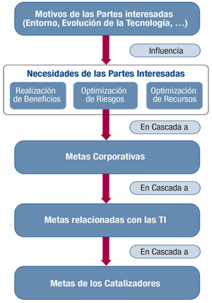

La Cascada de Metas
Es el mecanismo para traducir las necesidades de las partes interesadas en:
- Metas corporativas.
- Metas relacionadas con las TI.
- Metas catalizadoras o de los habilitadores: Específicas, útiles y a medida.

Dado que toda empresa tiene objetivos diferentes, una empresa puede personalizar COBIT para adaptarlo a su propio contexto mediante la cascada de metas.
Cada empresa opera en un contexto diferente; este contexto está determinado por factores externos (el mercado, la industria, geopolítica, etc.) y factores internos (la cultura, organización, umbral de riesgo, etc.) y requiere un sistema de gobierno y gestión personalizado.
Las necesidades de las partes interesadas deben transformarse en una estrategia corporativa factible. La cascada de metas de COBIT 5 es el mecanismo para traducir las necesidades de las partes interesadas en metas corporativas, metas relacionadas con las TI y metas catalizadoras específicas, útiles y a medida. Esta traducción permite establecer metas específicas en todos los niveles y en todas las áreas de la empresa en apoyo de los objetivos generales y requisitos de las partes interesadas y así, efectivamente, soportar la alineación entre las necesidades de la empresa y las soluciones y servicios de TI.
Paso 1. Los Motivos de las Partes Interesadas Influyen en las Necesidades de las Partes Interesadas
Las necesidades de las partes interesadas están influenciadas por diferentes motivos, por ejemplo, cambios de estrategia, un negocio y entorno regulatorio cambiantes y las nuevas tecnologías.
Paso 2. Las Necesidades de las Partes Interesadas Desencadenan Metas Empresariales
Las necesidades de las partes interesadas pueden estar relacionadas con un conjunto de metas empresariales genéricas. Estas metas corporativas han sido desarrolladas utilizando las dimensiones del cuadro de mando integral (CMI. En inglés: Balanced Scorecard, BSC) y representan una lista de objetivos comúnmente usados que una empresa puede definir por sí misma. Aunque esta lista no es exhaustiva, la mayoría metas corporativas específicas de la empresa pueden relacionarse fácilmente con uno o más de los objetivos genéricos de la empresa.
COBIT 5 define 17 objetivos genéricos, como se muestra en la figura 5, que incluye la siguiente información:
• La dimensión del CMI en la que encaja la meta corporativa
• Las metas corporativas
• La relación con los tres objetivos principales de gobierno -- realización de beneficios, optimización de riesgos y optimización
de recursos (‘P’ indica una relación primaria y ‘S’ una relación secundaria, es decir una relación menos fuerte).
Paso 3. Cascada de Metas de Empresa a Metas Relacionadas con las TI
El logro de metas empresariales requiere un número de resultados relacionados con las TI, que están representados por las metas relacionadas con la TI. Se entiende como relacionados con las TI a la información y tecnologías relacionadas, y las metas relacionadas con las TI se estructuran en dimensiones del CMI. COBIT 5 define 17 metas relacionadas con las TI.
La tabla que mapea entre las metas relacionadas con TI y los empresariales, muestra cómo cada meta corporativa es soportada por varias metas relacionadas con TI.
Paso 4. Cascada de Metas Relacionadas con las TI Hacia Metas Catalizadoras
Alcanzar metas relacionadas con las TI requiere la aplicación satisfactoria y el uso de varios catalizadores. Los catalizadores incluyen procesos, estructuras organizativas e información, y para cada catalizador puede definirse un conjunto de metas relevantes en apoyo de las metas relacionadas con la TI.